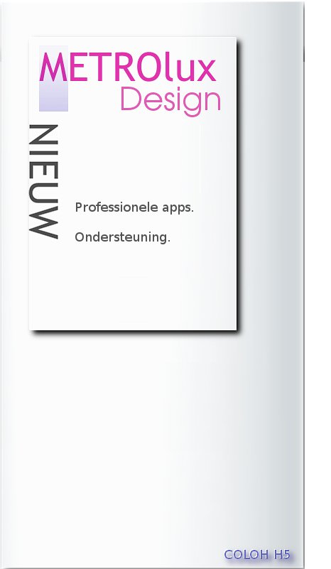

Versie 1.0.0.16 ©2014 A.Greven

INTRODUCTIE METROlux & METROluxPRO-setup
Het METROlux menu is een optimaal gebruikers-vriendelijk menu met
alle belangrijke applicaties voor een complete desktop.
- HOE KUNT U ADVERTEREN-
Onze inzet en ons werk kan door partikulier en bedrijven worden gesponsord door o.a. het plaatsen van een advertentie,en natuurlijk sponsoring waarbij in overleg reclame blokken die wij in onze menus integreren voor bedrijven,clubs of vereningen.
uw advertentie wordt hier geplaatst:
U kunt ook een link zonder afbeelding plaatsen in het menu:
Meer informatie over een link met METROlux
U heeft een andere vraag?
neem contact op met:
dhr A.Greven telefoon +31(0)633962565 of stuur een mailbericht met uw vraag naar:
METROlux-beheer
ONS BELEID.
Reclame door advertenties helpen ons indien deze niet de functionaliteiten in het menu hinderen of storend worden ervaren.
Wijzigingen of toevoeging aan de home en pro versie's als reclames kan uitsluitend door ons worden geintegreerd.
Alle te betalen uitgebrachte versies hebben wij ingedeeld in Pro en Home versies.
De performance van het menu is ons een groot goed en dit willen wij beschermen.
- ADVERTENTIE PLAATSEN-
Locatie van uw advertentie kan in overleg.
Locaties zijn o.a. een tegel op het menu zelf door dat u een functie in het menu kunt aanbieden.
OP de index onder de tegel INFO.
Hiervoor komt een speciale pagina voor advertenties.
Enkele adverteerders zouden in overleg op het installatie menu en de handleiding hun advertentie kunnen plaatsen.
Wij gaan altijd met u in overleg over de vergoedingen van de reclame advertenties.
Nu opdracht geven voor plaatsing van mijn advertentie.
|
Advertentie bepalingen Versie 1.0.0.16Voorwaarden
Versie 1.0.0.16 2014
|
Beste gebruiker,
Bedankt voor uw interesse en voor het aankopen van het METROlux menu.
|
Alle advertenties en reclame middelen die zijn toegestaan in het METROluxPRO mogen van diverse aard zijn.
Producten of diensten worden vooraf geselecteerd en wij behouden ons het recht hierin een keuze te maken.
Advertenties die producten of diensten aanprijzen die een relatie hebben met ongeoorloofd misbruik, geweldadig zijn of provocerend zijn worden niet toegelaten of direct verwijderd.
Voor reclame en advertenties voor sociale instellingen of goede doelen kunt u contact opnemen met:
dhr A.Greven telefoon +31(0)633962565 of stuur een mailbericht met uw vraag naar:
METROlux-beheer
|

|